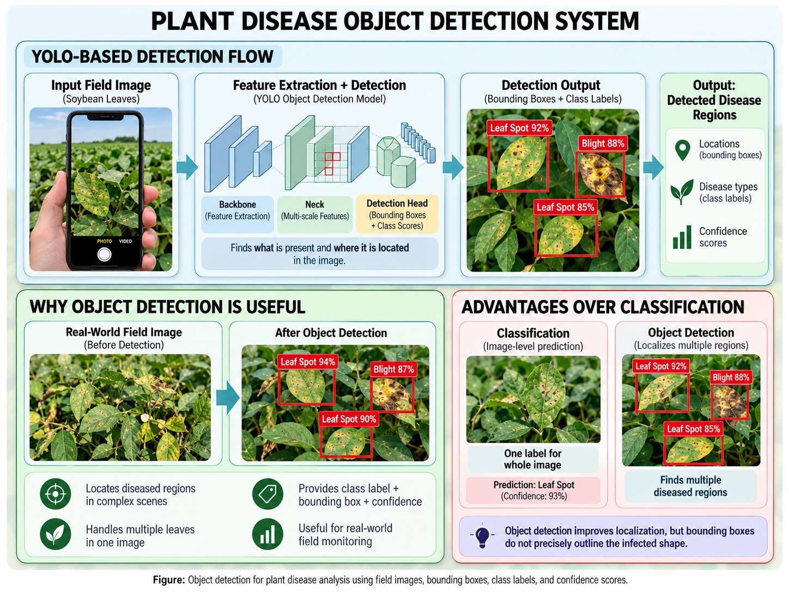

Object Detection for Plant Diseases
Object detection goes beyond classification by identifying both what is present in an image and where it is located. Instead of assigning one label to the entire image, an object detection model places bounding boxes around leaves or diseased regions and assigns a class label to each detected area.
Why Object Detection Is Useful
In real-world mobile images, a scene may contain several leaves, overlapping plants, soil, branches, or other background objects. Object detection can first locate individual leaves or visible disease regions before further analysis is performed.
YOLO-Based Detection
YOLO, which stands for You Only Look Once, is a popular object detection approach because it can detect multiple objects in a single image quickly. The model processes the image and predicts bounding boxes, class labels, and confidence scores. [1]
For plant disease analysis, a YOLO-based model can be trained to detect symptoms such as spots, lesions, discoloration, or damaged regions. Because YOLO models are designed for fast inference, they are useful for real-time or mobile applications.
Typical Detection Output
- Bounding box: Shows where the leaf or disease region is located.
- Class label: Identifies the detected disease category.
- Confidence score: Indicates how confident the model is in its prediction.

Figure: YOLO-based plant disease detection showing bounding boxes, disease labels, confidence scores, and comparison with image classification.
Advantages Over Classification
Object detection is more suitable for complex real-world scenes because it can handle multiple leaves in one image and identify where disease symptoms occur.
However, a bounding box still covers a rectangular area and does not precisely show the exact shape of the damaged region. For that reason, segmentation can be used when more detailed disease localization is required.
Classification vs Object Detection
Classification provides one prediction for the complete image. Object detection provides both a disease class and the location of one or more detected regions.
This makes object detection more useful when an image contains several leaves or when disease symptoms occupy only a small part of the scene.